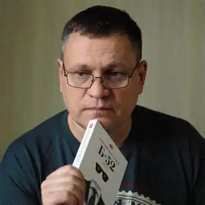
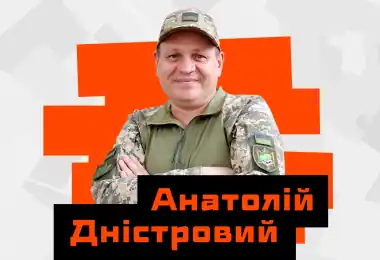

Анатолій Дністровий народився 30 липня 1974 року у місті Тернопіль. Син поета і літературознавця, професора, доктора філологічних наук Олександра Астаф'єва. Засновник і учасник літературної групи "Друзі Еліота" (1993—1996). Входив до Асоціації українських письменників (з 1998 до 2017 року, вийшов за власним бажанням).
Член Українського ПЕН.
Навчався в середній школі № 20 м. Тернопіль. Там же закінчив професійно-технічне училище № 2 (1991), історико-філологічний факультет Ніжинського педагогічного університету імені Миколи Гоголя (1997) та аспірантуру на кафедрі філософії Київського національного аграрного університету (2000). На філософському факультеті Київського національного університету імені Тараса Шевченка захистив дисертацію, присвячену розумінню історії представниками українського радикального націоналізму (2000). Кандидат філософських наук (2001). У різні роки викладав в Національному аграрному університеті (асистент кафедри філософії, 1997—2000), Київському національному університеті ім. Тарас Шевченка (гостьовий доцент Інституту філології, 2003—2004, 2013—2014), Університеті Масарика (читав спецкурс на українознавчому відділення; Брно, 2021). Працював у Національному інституті стратегічних досліджень (відділ етнополітики, заступник керівника відділу, 2001—2005; відділ гуманітарної політики, керівник сектору культурологічних досліджень, 2013—2015), аналітиком і спічрайтером у політичних проєктах, у журналі "Український тиждень" (керівник спецпроєктів, редактор культури, 2009—2011), піар-директором видавництва "Грані-Т" (2011—2012). Анатолій Дністровий працює на межі контркультури та міської прози з виразною соціальною та психологічною складовою. Останнім романам притаманна посилена есеїстичність. Дністровий став відомим передусім своєю молодіжною трилогією — романи "Місто уповільненої дії" (2003, друге видання — 2021), "Пацики" (2005, друге видання — 2011, третє видання — 2020), "Тибет на восьмому поверсі" (2005, друге видання — 2013). Не меншої популярності набув його роман "Дрозофіла над томом Канта" (2010). Мовна амплітуда прози Дністрового (кримінальне арґо, молодіжний сленг) були широко використані в укладанні низки лінгвістичних словників, зокрема професором, доктором філологічних наук, Лесею Ставицькою ("Короткий словник жаргонної лексики української мови", Київ: Критика, 2003, "Українська мова без табу: словник нецензурної лексики та її відповідників", Київ: Критика, 2008). Іншими складовими творчості є поетичний доробок (найвдалішою критики відзначають верліброву частину, експериментування з ретроурбанізмом та культурною пам'яттю; збірки "Покинуті міста", 2004; "Черепаха Чарльза Дарвіна", 2015) і чималий корпус есеїстики, ключовими лініями якої переважно є літературознавство і філософія творчості (книги "Автономія Орфея", "Письмо з околиці"), політико-філософська публіцистика на есеї про ліберальну демократію (книга "Злами й консенсус"), націоналізм. Дністровий перекладав із німецької, чеської, білоруської мов (Георг Тракль, Йозеф Вайнгебер, Пауль Целан, Готфрід Бенн, Гергард Фріч, Вітезслав Незвал, Алесь Рязанов). Окремі поетичні та есеїстичні твори Дністрового перекладали англійською, італійською, чеською, словацькою, польською, сербською, німецькою, вірменською, білоруською та російською мовами. Як співавтор брав участь у розробці та написанні низки прогнозно-аналітичних документів Національного інституту стратегічних досліджень: аналітичних доповідей "Проблеми та пріоритети модернізації української культурної політики" (Київ: НІСД, 2014), "Україна та проект "Русского мира"" (Київ: НІСД, 2014), "Системна криза в Україні: передумови, ризики, шляхи подолання" (Київ: НІСД, 2014), колективної монографії "Донбас і Крим: ціна повернення" за редакції В.Горбуліна (Київ: НІСД, 2015). У 2015—2016 роках очолював аналітичну групу Голови Верховної Ради України, в 2017—2019 роках учасник урядової піар-кампанії (спічрайтінг, інформаційна аналітика).